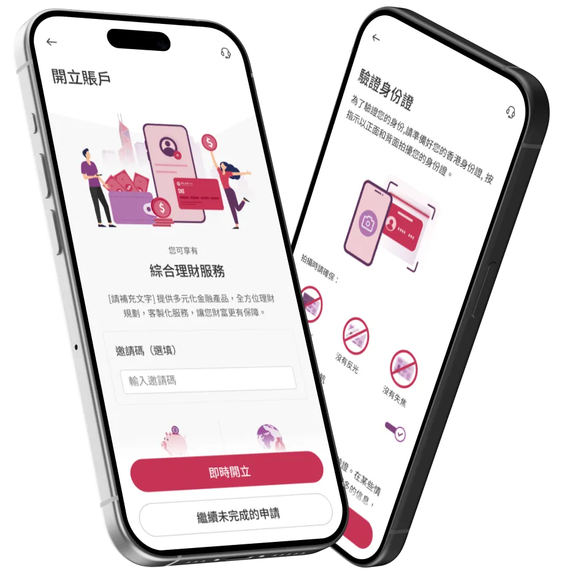
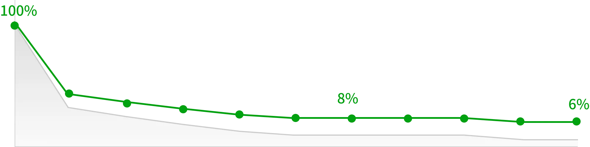
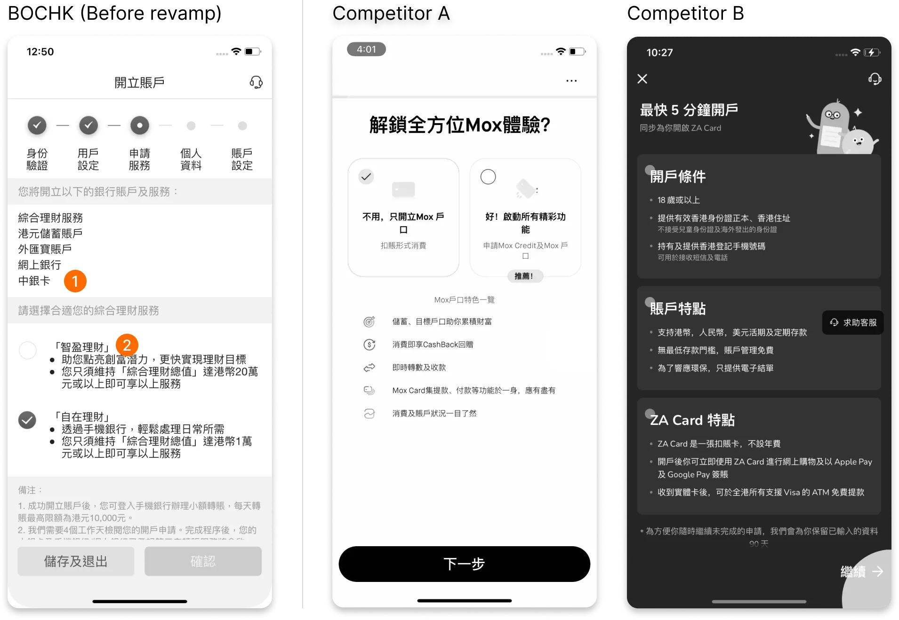
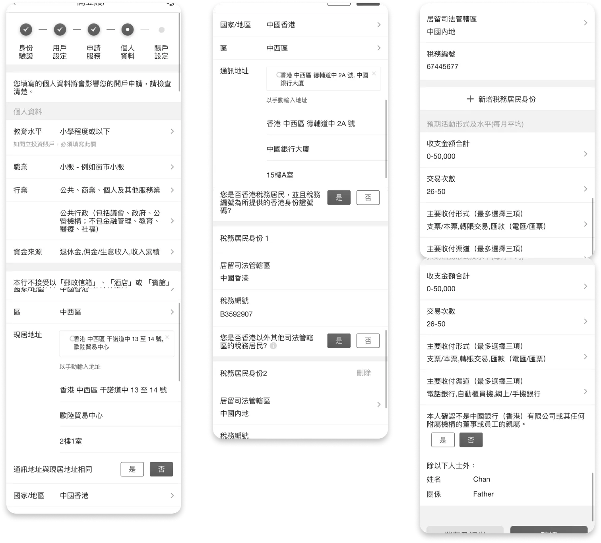
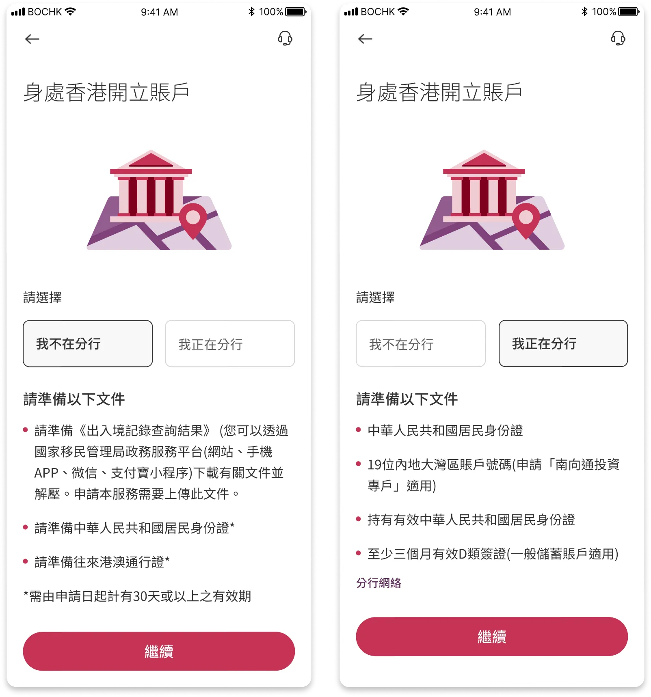
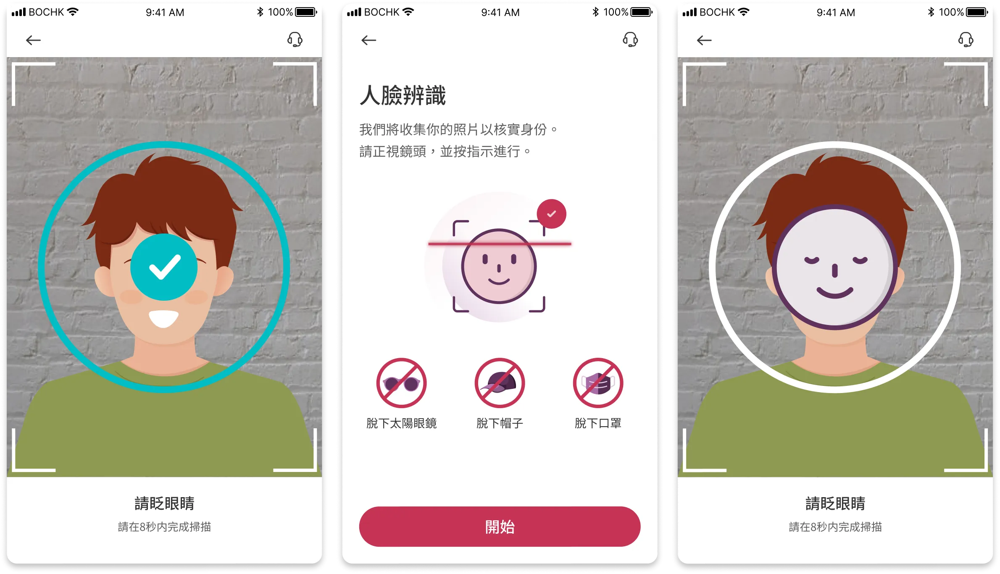

Introduction
The BOCHK Banking App is a comprehensive mobile banking solution. It offers a wide range of services including account opening, wealth management, investment, and spending, all in one app. With just a HKID card and address, customers can open an account without visiting a branch.
Final Delivery - At a Glance
The redesigned account opening flow addresses key friction points throughout the user journey, from initial consideration through identity verification to account activation.

Flow chart showing the first steps of account opening

IDV - Identity verification
My Role
I'm the lead product designer for this project. I collaborated with Business Analysts, Product Managers, and IT developers throughout this project.

Goal: Increase Conversion Rate, Reduce Dropoffs
The goal is to streamline the account opening process and reduce dropoff for each step, thus increasing the overall conversion rate.
Key Objectives
- Efficiency: To complete the entire identity verification and account setup process in under five minutes without needing to visit a physical branch.
- Clarity: Provide clear, real-time feedback on application status to eliminate uncertainty regarding document approval or next steps.
- Assisted with Tech: Create a frictionless data-entry experience that utilizes auto-fill and OCR technology to minimize manual typing and potential errors.

Current dropoff, and projection after improvement
Identified Problems
Problem 1: Navigation is Confusing
Texts used in the account opening are confusing to customers. Choices are often conflicting, with no clear sight of what to expect next.

The figure shows a convoluted navigation a customer faces when opening an account
Problem 2: Unclear Benefits
The application process did not discuss what the benefits are for opening an account, while competitors provide concise and easy-to-read texts for customers to understand what the benefits are.

A comparison of the problematic design, against major competitors
Problem 3: Overwhelming Input Fields
Some pages in the account opening form are extremely long. This makes the application form difficult to complete for customers. Validation errors are difficult to spot since the content is so overwhelming.

Customers were asked to input lots of personal info in one single page
Problem 4: Poor Facial Recognition Design
During the account opening process, customers are asked to scan their faces. The facial recognition screen is poorly designed. For compliance reasons, this step is required to complete in less than 7 seconds. Customers will have to grasp large amounts of instructions in a short time. There is also a countdown clock which puts pressure on the customer.

Unclear screen instructions
Problem 5: Convoluted Address Search
Customers are asked to complete their home address. To assist customers in entering their address, there is an address search function. However, the function is poorly designed. Customers often have to jump between an inline search box and an overlay window, which can be inconvenient.

Convoluted interactions - Address search is not intuitive
Starting Point: Rework Journey
The journey is being reworked to address these different business needs.

Solutions
Solution 1: Improve Navigation and Copywriting
The previously discovered navigation issues were resolved by reworking the button labels. "Contrasting options" are presented to aid customer selections.

Solution 2: Adding an Introduction Page
An intro page is added to describe to the customer what sort of benefits are offered. I worked with an illustrator to create these drawings.

Solution 3: Additional Help for Mainland Customers
Customers from Mainland China require additional documents to open their accounts. The required documents are listed early in the user journey.

Solution 4: Tier Service Information
Provide information of each tier service to the customer.

Solution 5: Visualized Instructions
It was observed that a few customers could not complete scanning of their HKID card. To assist customers, a brief tutorial page and on-screen instructions have been added.

Solution 6: Improved Facial Recognition Experience
The facial recognition step has been reworked with clear and on-screen instructions.

Solution 7: Improved Address Search Function
The address search function has been enhanced with advanced search and is clearly organized into different regions.

Final Result
100+ finalized screens were delivered in the end. For bank projects, various stakeholders including the platform owner, product managers, compliance, and IT have to agree on the solution. Excellent communication was maintained between these parties throughout the project.

Impact and Results
After launching the redesigned account opening flow, we saw significant improvements across key metrics:
The completion rate increased from 67% to 85% within the first quarter, exceeding our target. Key improvements included reduced time-to-complete (from 8 minutes to under 5 minutes) and significantly higher customer satisfaction scores for the identity verification process.
The redesigned navigation and clearer instructions particularly helped first-time users and elderly customers, who previously struggled with the facial recognition and address search steps.
Bug Fixes
For a project of this scale, even though we have already fixed plenty of bugs before public release, there are bound to be minor bugs.
Post-launch Optimization
This is a crucial next step for every UX improvement or product launch. With informed, actionable insights, we are able to design a better experience for our consumers.
Continue to Design Better Experiences
To follow through our product roadmap and continue to stick to our design principles.